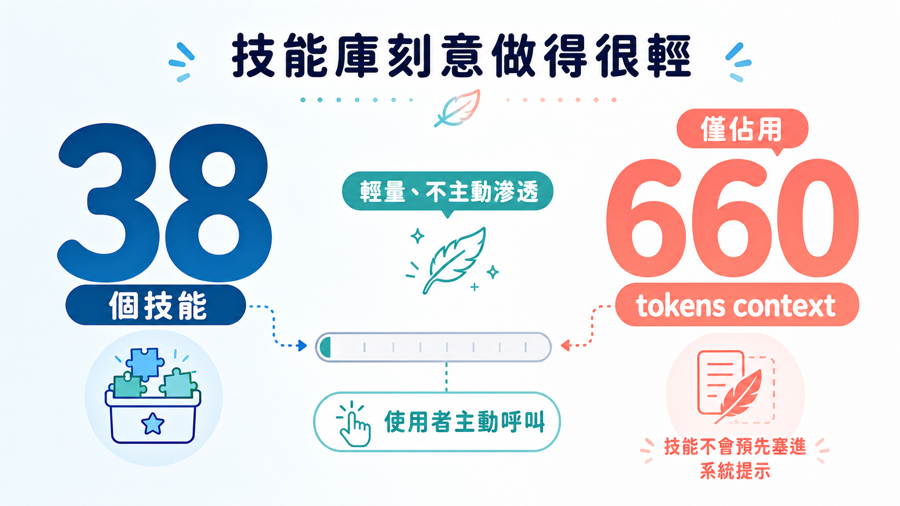
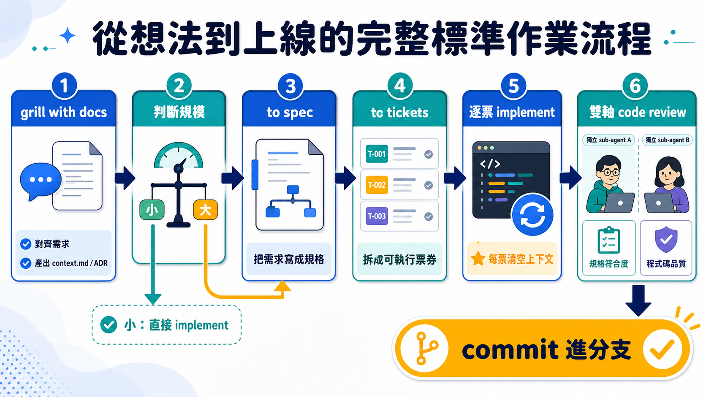

一個 GitHub repo 累積到十六萬兩千顆星、七百五十萬次下載，通常代表一件事：它已經被寫進無數團隊的日常工作流裡。但作者 Matt Pocock 自己承認，他從來沒有為這個 skills 專案寫過一份像樣的教學。使用者一直在問同一批問題：這些技能該用什麼順序執行？要怎麼裝？裝完之後呢？一個被如此大規模採用的工具，說明書卻是空的——這本身就是個值得停下來想一想的現象：代表這套東西的核心價值，可能根本不在「功能列表」上，而在一條沒有人講清楚的流程線裡。
這條流程線，才是這支影片真正想交代的東西。
先把場景還原。AI 編碼工具現在多半長這樣：你打開一個對話視窗，丟一句需求，agent 開始寫程式碼，寫到一半你發現方向不對，於是重新解釋，或者乾脆整個對話重來。這套做法在小任務上勉強能用，一旦任務稍微放大——例如要從一個 CLI 專案裡砍掉十幾個內部指令、重接底層共用模組——問題就會現形。你會在對話進行到某個點之後，發現 agent 開始忘記前面講過的細節，開始給出似是而非的建議，甚至捏造一些根本不存在的檔案或函式。這不是模型「變笨」了，而是一個更根本的物理限制：上下文視窗這個東西，並不是全程等質的。
Matt 在影片裡給了一個具體的數字錨點：大約 14 萬 token 是他認定的「聰明區」邊界。過了這個門檻，模型的注意力開始劣化，幻覺開始出現。這句話聽起來像是經驗談，但它指向一個所有長任務都躲不掉的結構性事實——你不能假設一次對話視窗能無限承載一個大型專案的全部脈絡，你必須主動替它劃界。而一旦你接受這個前提，原本「跟 AI 聊到它把功能做完」這種直覺式的工作方法，就注定會在稍微複雜一點的任務上失敗。這不是操作不熟練的問題，是方法論本身撐不住。
Matt 的 skills 系統，說穿了就是針對這個邊界設計出來的一整套分工機制。裝法很簡單，一行指令 npx skills@latest add mattpocock/skills，不管是全新專案還是既有的大型程式碼庫都適用。裝的過程會列出三十八個技能，分成兩組：一組是他親自認證過、確定夠格公開使用的「官方技能」；另一組是他還在實驗、未來可能整組砍掉的半成品。這個分組本身就透露出一種務實態度——他不假裝所有東西都已經成熟，反而把「還在測試」的部分明著標出來，讓使用者自己選擇要不要冒險用。
裝好之後還沒完，還得再跑一次 setup mattpocock skills 做接線工程。這一步在問三件事：issue tracker 要接去哪（GitHub、Jira、Linear、或單純本地端的 Markdown 檔案都行，你只要用一句話告訴 agent「幫我接到 Jira」，它就會自己去設定，不需要你手動寫設定檔）；要不要開三角標籤來追蹤票務狀態；以及你的專案是單一個 domain 還是需要拆成多個 bounded context（對九成以上的人來說，選單一個就夠）。這一步做完，repo 裡的 claude.md 會被寫入幾條連結，分別指向 issue tracker、triage 標籤、domain 文件——換句話說，agent 從此有了一份「這個專案的規矩」可以隨時查閱，而不是每次對話都得重新猜。
真正有意思的地方，是這套技能庫刻意把自己做得很「輕」。市面上不少 skills 專案會把每個技能的說明塞進 agent 的 system prompt，結果技能一多，還沒開始做事，context 就先被吃掉一大塊。Matt 的做法相反：大部分技能是「使用者主動呼叫」型的，描述寫得極短極精準，不主動滲透進 agent 的預設脈絡裡。影片裡他實測給你看——裝了全部三十八個技能之後，實際佔用的 context 只有 660 個 token。這個數字本身就是一種立場宣示：工具不該替你先假設你會用到它，工具應該安靜地待在那裡，直到你點名它。

接下來才是真正的主軸：一條從想法到上線、貫穿多次對話視窗的標準作業流程。
流程的第一站叫 grill with docs。你丟給它一句很粗略的想法就行——影片裡的示範是「我想把這個 CLI 裡大部分內部工具都拿掉，只留公開介面用的部分，這個 repo 現在太花俏了，我想把它簡化」，就這樣一句話，不用寫得多精確。接下來 agent 會反過來面試你，一輪一輪問問題，一邊探索程式碼庫，一邊把你腦中模糊的意圖逼問成一份可被檢驗的計畫。這一步是有狀態的——它會把學到的東西寫進 context.md 和架構決策紀錄（ADR）裡，不是問完就丟。示範裡只問了六輪問題就收斂出結論（Matt 說他自己平常大概要問到二十輪，視任務大小而定），最後產出的計畫是：刪十個指令檔案、刪三個測試、重接共用模組的接線。如果面試過程中有問題沒辦法光靠對話講清楚——需要跑一段程式碼才能驗證的那種——流程裡還嵌了一個叫 prototype 的技能可以插進來跑一次實驗，再把結果接回主線。
到這裡，路會分岔。如果任務小到一個 context 視窗就能吃完，直接下 /implement，讓它跑完收工。但如果評估下來這件事得跨越好幾次對話——也就是說，單一視窗的「聰明區」預算不夠用——這時候該做的不是硬撐著繼續對話，而是呼叫 to spec。這個動作會把整輪討論（示範裡累積到 4 萬 6 千 token）壓縮成一份結構完整的文件：問題陳述、解決方案、使用者故事、實作決策、測試決策，全部寫進去，存進你選定的 issue tracker。這份 spec 扮演的角色，是整個多階段工程的「終點描述」——它定義了做完之後長什麼樣子，而不是怎麼做到那裡。
再下一步是 to tickets，把 spec 拆解成一張張可執行的票，每一張票的份量被刻意設計成剛好塞得進一個 context 視窗。示範案例裡系統一開始切出三張票，Matt 覺得切太細，直接要求「合成一張就好」。而另一個他自己實際跑過的真實案例——同樣是清理某個 repo 的移除工程——則被拆成十一張票，每張票底下都附上驗收標準，大部分驗收條件其實已經寫在 spec 裡了，票本身只留下「這一階段具體要做什麼」。這種分法背後的邏輯很直白：spec 決定終點，tickets 決定路徑，兩者合起來，agent 才算真正拿到了完整的作戰地圖。
實際執行時，票不是一次全部丟給 agent 跑完，而是一張接一張做——做完一張，評估有沒有逼近聰明區的上限，沒有的話或許再多塞一張，通常則是每做完一張票就清空一次 context，讓下一段工作重新從乾淨的狀態開始。這個「清空」的動作，才是整套設計裡最容易被忽略、卻最關鍵的一步：它承認了一個事實——與其讓 agent 在一個逐漸擁擠、逐漸退化的視窗裡硬撐到底，不如主動替它重開一輪。
所有票做完之後，implement 技能會自動觸發程式碼審查，而且審查方式本身藏著一個對 AI agent 相當誠實的觀察。審查分兩軸：一軸是拿實作結果去對照原始 spec，確保大範圍工程沒有漏掉票裡沒寫清楚的細節；另一軸是對照專案裡既有的程式碼規範文件，如果專案根本沒寫規範，就退回去用一套類似 Martin Fowler 那種經典的程式碼異味檢查標準。而這整段審查，是刻意丟給獨立的 sub-agent 去做，不是讓寫程式的那個 agent 自己審自己。原因很直接：agent 對自己剛寫完的程式碼，普遍會有一種「這樣就行了」的盲點——它們在編輯或挑剔自己剛產出的東西這件事情上，表現得特別差。換一個沒有寫過這段程式碼、拿到乾淨 context 的 agent 來審，才有機會抓出真正的問題。示範案例裡，兩軸審查都通過，程式碼直接被 commit 進當前分支。
把整條路徑串起來看：對齊共識（grill with docs）、確立終點與路徑（spec 與 tickets）、逐票實作並在每一步清空記憶、最後交給獨立視角覆核——這其實是一套把「一個會胡思亂想、記性又不穩定的推理引擎」馴化成「可控工程流程」的做法。它承認了模型本身的限制（視窗會退化、agent 審不了自己的作業），然後把這些限制設計進流程本身，而不是假裝它們不存在。這也是為什麼 Matt 特別強調，這一套跟你用什麼模型、什麼效果強度、什麼 harness 都無關——他自己用的是 Claude Code 搭配中等推理強度的 Opus，但流程本身不依賴任何特定引擎的聰明程度，它依賴的是結構本身夠不夠穩。

如果你只想抄一條捷徑，影片裡其實藏了一個更快的入口——裝完技能之後，先問一句「ask matt，我該怎麼開始」，這個技能本身就是把整條流程濃縮成回答，直接把新手該從哪裡起步講清楚。省下重新摸索順序的時間，大概就是這整支教學想解決的，那個十六萬顆星星始終沒有說清楚的問題。